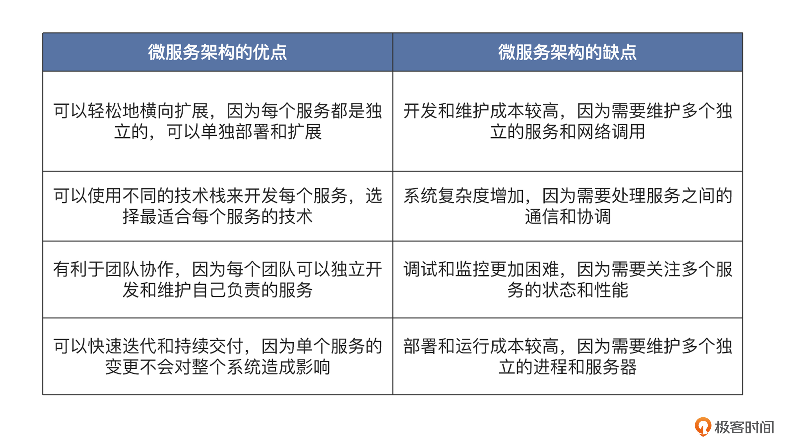
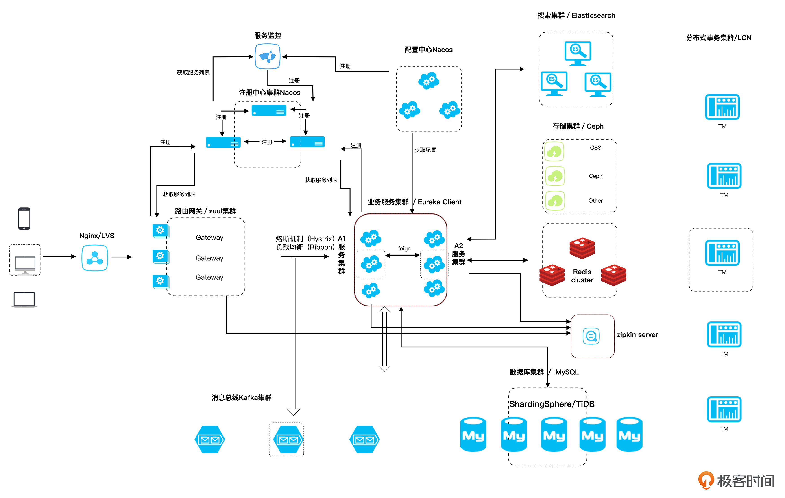
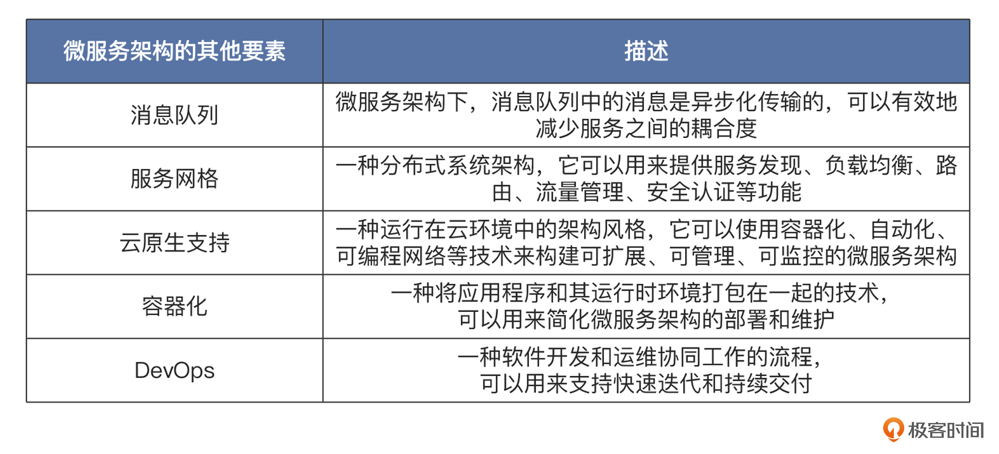
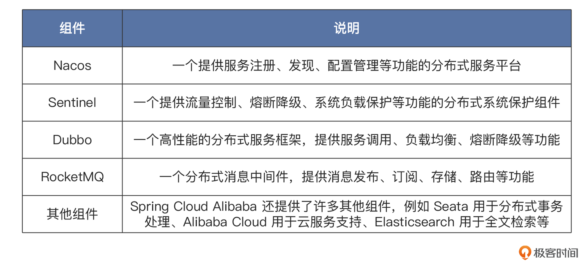
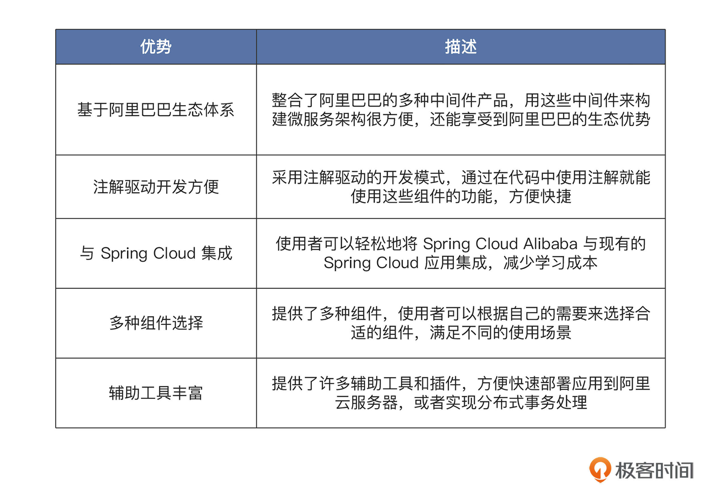
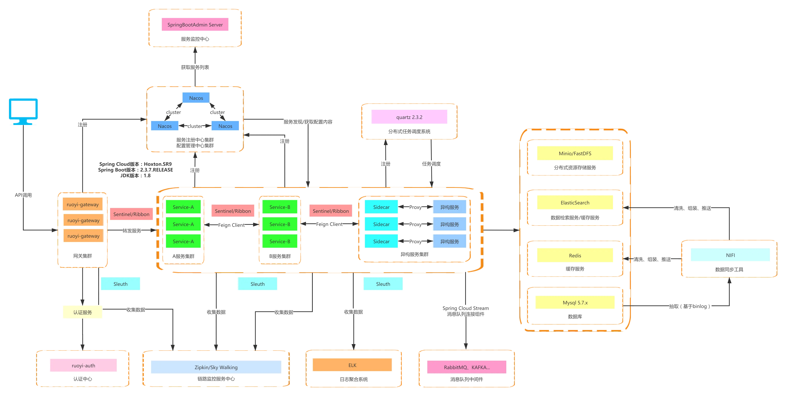
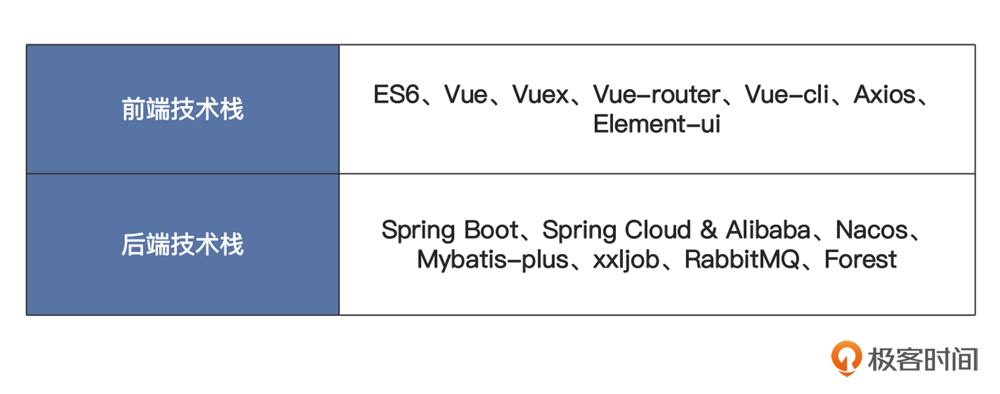

- 00 开篇词 练好基本功，优秀工程师成长第一步.md
- 01 CISC & RISC：从何而来，何至于此.md
- 02 RISC特性与发展：RISC-V凭什么成为“半导体行业的Linux”？.md
- 03 硬件语言筑基（一）：从硬件语言开启手写CPU之旅.md
- 04 硬件语言筑基（二）_ 代码是怎么生成具体电路的？.md
- 05 指令架构：RISC-V在CPU设计上到底有哪些优势？.md
- 06 手写CPU（一）：迷你CPU架构设计与取指令实现.md
- 07 手写CPU（二）：如何实现指令译码模块？.md
- 08 手写CPU（三）：如何实现指令执行模块？.md
- 09 手写CPU（四）：如何实现CPU流水线的访存阶段？.md
- 10 手写CPU（五）：CPU流水线的写回模块如何实现？.md
- 11 手写CPU（六）：如何让我们的CPU跑起来？.md
- 12 QEMU：支持RISC-V的QEMU如何构建？.md
- 13 小试牛刀：跑通RISC-V平台的Hello World程序.md
- 14 走进C语言：高级语言怎样抽象执行逻辑？.md
- 15 C与汇编：揭秘C语言编译器的“搬砖”日常.md
- 16 RISC-V指令精讲（一）：算术指令实现与调试.md
- 17 RISC-V指令精讲（二）：算术指令实现与调试.md
- 18 RISC-V指令精讲（三）：跳转指令实现与调试.md
- 19 RISC-V指令精讲（四）：跳转指令实现与调试.md
- 20 RISC-V指令精讲（五）：原子指令实现与调试.md
- 21 RISC-V指令精讲（六）：加载指令实现与调试.md
- 22 RISC-V指令精讲（七）：访存指令实现与调试.md
- 23 内存地址空间：程序中地址的三种产生方式.md
- 24 虚实结合：虚拟内存和物理内存.md
- 25 堆&栈：堆与栈的区别和应用.md
- 26 延迟分配：提高内存利用率的三种机制.md
- 27 应用内存管理：Linux的应用与内存管理.md
- 28 进程调度：应用为什么能并行执行？.md
- 29 应用间通信（一）：详解Linux进程IPC.md
- 30 应用间通信（二）：详解Linux进程IPC.md
- 31 外设通信：IO Cache与IO调度.md
- 32 IO管理：Linux如何管理多个外设？.md
- 33 lotop与lostat命令：聊聊命令背后的故事与工作原理.md
- 34 文件仓库：初识文件与文件系统.md
- 35 Linux文件系统（一）：Linux如何存放文件？.md
- 36 Linux文件系统（二）：Linux如何存放文件？.md
- 37 浏览器原理（一）：浏览器为什么要用多进程模型？.md
- 38 浏览器原理（二）：浏览器进程通信与网络渲染详解.md
- 39 源码解读：V8 执行 JS 代码的全过程.md
- 40 内功心法（一）：内核和后端通用的设计思想有哪些？.md
- 41 内功心法（二）：内核和后端通用的设计思想有哪些？.md
- 42 性能调优：性能调优工具eBPF和调优方法.md
- 先睹为快：迷你CPU项目效果演示.md
- 加餐01 云计算基础：自己动手搭建一款IAAS虚拟化平台.md
- 加餐02 学习攻略（一）：大数据&云计算，究竟怎么学？.md
- 加餐03 学习攻略（二）：大数据&云计算，究竟怎么学？.md
- 加餐04 谈谈容器云与和CaaS平台.md
- 加餐05 分布式微服务与智能SaaS.md
- 国庆策划01 知识挑战赛：检验一下学习成果吧！.md
- 国庆策划02 来自课代表的学习锦囊.md
- 国庆策划03 揭秘代码优化操作和栈保护机制.md
- 温故知新 思考题参考答案（一）.md
- 用户故事 我是怎样学习Verilog的？.md
- 结束语 心若有所向往，何惧道阻且长.md
加餐05 分布式微服务与智能SaaS
你好，我是LMOS。
在之前的课程中，我们学习到了云计算的IaaS、PaaS层的技术。
这节课，让我们一起了解一下分布式微服务和智能SaaS层应用开发技术吧。它们可以帮助你构建出可扩展、可维护更强的应用程序，这对于任何计算机开发人员来说，都是很有价值的。
初识微服务架构
我们先简单聊聊微服务架构是什么，优缺点有哪些。
什么是微服务架构
微服务架构是一种架构风格，它提倡将单个应用拆分成若干个小的服务，每个服务运行在其独立的进程中，并且通过网络调用来协同工作。每个服务都围绕着特定的业务能力构建，并且通常会使用不同的技术栈来实现。
这种架构风格有利于维护和开发，因为每个服务都相对较小，团队可以独立开发和部署。同时，微服务架构也支持快速迭代和持续交付，因为单个服务的变更不会影响整个系统的稳定性。
微服务架构当然也不是银弹，它也有自己的优点和缺点，为了方便理解，我整理了一张表格来帮你做对比。- 
微服务架构的关键要素
接下来，我们看看微服务架构中有哪些关键要素。后面是简化版的微服务架构图。

从图中我们可以看出，微服务架构的核心要素包括五个部分。
第一部分是服务注册与发现，微服务架构中的服务需要使用服务注册中心进行注册和发现，使得服务之间能够互相调用。
第二部分是负载均衡。在微服务架构中，负载均衡组件会将请求按照一定规则，转发到不同的服务实例上，从而提高系统的吞吐量和可用性。
第三部分是服务调用。微服务架构中的服务之间通常使用远程过程调用（RPC）或者 HTTP 接口来进行通信。
第四部分是服务熔断和降级。在微服务架构中，服务之间的依赖关系非常复杂，为了防止出现故障扩散并保证系统可用性，我们需要使用服务熔断和降级机制来保护服务。
最后还有第五部分，监控和日志。在微服务架构中，需要对每个服务的性能和故障情况进行监控和记录，以便及时发现和解决问题。
这里我也列出了微服务架构的其他要素，你可以参考后面的表格。- 
看完上面构成微服务的关键要素之后，不知道你会不会发出感叹——这么多组件，我要是一个一个实现一遍，那需要花多长时间啊！
其实不用慌，目前业界已经有了很多优秀的开源实践了，基于Spring Cloud框架的Spring Cloud Alibaba就是最佳实践之一，接下来我们就来简单了解一下这个框架。
Spring Cloud Alibaba的架构与核心组件
Spring Cloud Alibaba是一个基于Spring Cloud实现的分布式微服务框架，它整合了阿里巴巴的中间件产品，并提供了与Spring Cloud相似的编程模型和开发体验。Spring Cloud Alibaba的架构基于Spring Cloud实现，主要组件可以参考后面的表格。- 
Spring Cloud Alibaba的开发模型基于Spring Cloud的注解驱动开发，使用者通过在代码中使用注解的方式，即可使用这些组件的功能。例如，使用者可以用@EnableNacosDiscovery注解来启用Nacos服务发现功能，使用@SentinelResource注解来保护服务的流量和熔断降级等。
Spring Cloud Alibaba还提供了与Spring Cloud相似的编程模型和开发体验，方便使用者将Spring Cloud Alibaba与现有的Spring Cloud应用轻松地集成起来。比方说，可以使用Spring Cloud的Feign客户端来调用Dubbo服务，或者使用Spring Cloud 的 Stream框架来使用RocketMQ等。
Spring Cloud Alibaba这个框架还提供了许多辅助工具和插件。例如，使用者可以使用Alibaba Cloud的扩展来快速部署应用到阿里云服务器，或者使用 Seata 扩展来实现分布式事务处理。
总之，Spring Cloud Alibaba是一个功能强大的分布式微服务框架，可以帮助使用者快速构建基于阿里巴巴中间件的微服务应用。它提供了丰富的组件和工具，方便我们轻松地实现服务注册、发现、负载均衡、流量控制、熔断降级、分布式事务等功能。
为什么选择Spring Cloud Alibaba 构建微服务
使用Spring Cloud Alibaba的优势，我同样梳理了表格，你可以参考一下。- 
然而正是因为Spring Cloud Alibaba功能太过强大，组件比较多，为了节约搭建微服务脚手架的时间精力，我们选择了RuoYi-Cloud这款脚手架进行二次开发。- 
上图来自 RuoYi-Cloud 官网，RuoYi-Cloud是一套基于Spring Cloud Alibaba 的企业级快速开发脚手架，你会在里面发现很多经典技术的组合（Spring Boot、Spring Cloud Alibaba、Vue、Element）。
RuoYi-Cloud功能十分强大，非常适合我们专注于业务进行SaaS应用开发。里面内置了很多开箱即用的模块，比如系统参数、日志管理、菜单及按钮授权、数据权限、部门管理、角色用户、代码生成等等。此外，它还支持在线定时任务的配置和集群部署以及多数据源的管理。
智能 SaaS 应用开发
前面聊到的这些技术具体怎么落地应用呢？我们接着往下看。
SCRM（Social Customer Relationship Management）系统是一种分布式智能的软件即服务（SaaS）应用，旨在帮助企业管理和提升客户关系。
SCRM 系统通常涵盖跨越多个渠道的客户互动，如电子邮件、IM、社交媒体、网站、移动应用等。这些互动可以是实时的，也可以是异步的，因为面向的用户量比较大、业务逻辑比较复杂，所以比较适合使用分布式微服务架构进行设计。
而LinkWeChat则是一款基于企业微信的开源 SCRM 系统，是我参与设计与开发的。它比较适合作为分布式微服务架构在业务中落地实践的学习案例，这里也简单分享一下。
LinkWechat
LinkWeChat项目基于 RuoYi-Cloud 后台开发框架，这离不开RuoYi-Cloud 的开源。
前后端的技术栈你可以对照表格简单了解一下。

这里也简单列了一下这个项目的结构。首先是前端结构。
├── linkwe-pc // 后台项目
├── linkwe-mobile // 移动端项目包含移动工作台、任务宝、群裂变等H5）
然后是后端结构。
├── linkwe-api // 系统业务接口模块
├── linkwe-auth // 角色权限部门用户认证等模块
├── linkwe-common // 公共组件模块
├── linkwe-fileservice // 文件服务模块
├── linkwe-framework // 框架配置
├── linkwe-gateway // 网关服务
├── linkwe-scheduler // 定时任务相关模块
├── linkwe-service // 系统service层抽取，与数据库相关交互
├── linkwe-wecome // 企微接口实现
├── linkwe-wx-api // 系统中设计微信公众号相关接口模块
基于容器的LinkWechat项目部署实践
大概了解了这个项目，怎么启动它呢？
首先，你需要按照加餐03的步骤安装好docker和docker-compose。然后，创建目录并拉取代码。
mkdir link-wechat && cd link-wechat
git clone https://gitee.com/LinkWeChat/link-wechat
git clone https://gitee.com/LinkWeChat/link-we-chat-front
git clone https://gitee.com/LinkWeChat_admin/linkwechat-docker
接下来开始打包文件。
# 服务端打包
cd link-wechat
# 重要
cp ../docker-compose/bootstrap.yml config/run/bootstrap.yml
mvn clean package
# pc前端
cd link-we-chat-front/linkwe-pc
yarn install
yarn build
# mobile前端
cd link-we-chat-front/linkwe-mobile
yarn install
yarn build
然后，还需要修改配置和SQL。
sql文件
没有变动不需要操作，有需要就加到mysql/db文件夹内
增加nacos配置文件
默认已添加到 mysql/db/config.sql
增加xxl-job配置文件
默认已添加
然后打开linkwechat-docker目录依次运行。这样，LinkWechat项目就启动起来啦。
# 拷贝指定文件到对应目录
sh copy.sh
# 启动基础模块
sh deploy.sh base
# 启动项目其他模块
sh deploy.sh modules
重点回顾
这节课我们学到了在之前的IaaS、PaaS的架构思路的基础上是如何演进出分布式微服务技术，来为智能SaaS应用提供支撑的。
作为一个开源的工业级SaaS应用，这个项目可以帮助你初步了解一款分布式SaaS产品是如何设计开发，并通过微服务架构落地的。如果学完这节课之后还觉得意犹未尽，想要进一步学习分布式、微服务和智能SaaS产品方面的业务经验，欢迎加入 LinkWechat项目，一起共同建设。
到这里，我们的技术雷达加餐就结束了。恭喜你学完全部内容，也期待你在留言区和我交流互动。
© 2019 - 2023 Liangliang Lee. Powered by Vert.x and hexo-theme-book.